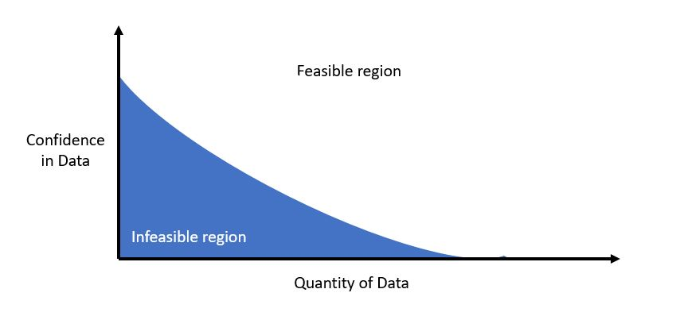
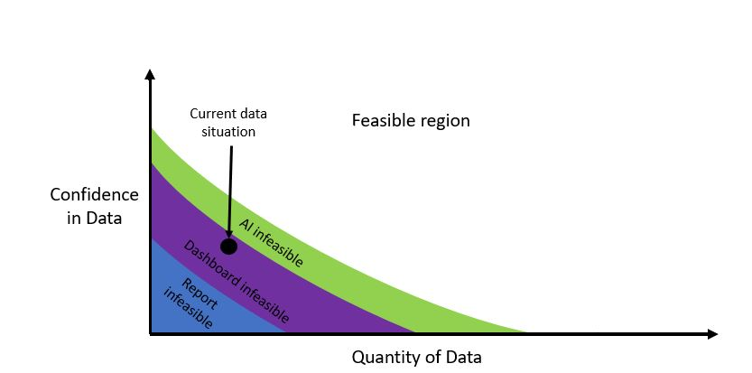

How to know you have the right data
TLDR; Depending on what you are trying to do with a use case, the requirements of your data will change. The more fancy things you try to do, the more you're going to need to have the data to fuel them.
Drilling for usefulness
We frequently get bombarded with the feeling that we should be doing more with our data. Sayings like “data is the new oil” make us think that we are sitting idly on top of something immensely valuable. In many cases that can be true- but like oil, just because we can tap into it does not mean that we can use it for everything in our lives (and especially not without heavy processing). Just like we wouldn’t use crude oil drawn from the ground as a household cleaner, we shouldn’t expect data to work for anything we might imagine right from the get-go. You could end up unintentionally making a mess in the process.
What are we trying to improve, anyways?
Understanding the value of your data comes down to understanding it in the context of your business. Data allows us to improve organizations, operations, and lives by targeting a variety of KPIs, and those KPIs ought to be central to whatever we are trying to achieve. In a business setting, we might look to reduce cost or make new revenue streams. Whatever the objective is, we have to be clear on what we’re trying to achieve and how we’re going to measure it. Until you’re talking about what you want to try to do with your data, it’s impossible to say if your data is sufficient to do the thing. We should start by defining use cases.
Note that use case definitions can be incredibly specific or incredibly broad. Creating a platform that can run experiments across all facets of an online retail business to boost sales revenue is a large scope, but one that is definite. Likewise, counting the number of customers visiting a restaurant in a day to see if you should buy another table comes with different requirements. Use cases can be micro-scale or massive, but all should have some type of value to the organization.
How to paint it out
Whenever you identify a use case that would be impactful to your organization, it’s useful to think of your data existing on two axes: the confidence in your data, and the quantity of your data. Quantity of the data refers to the absolute amount of data you can control, gather, and use in a relevant time period for the use case. Confidence in the data refers to how much you can truly believe that each measurement is capturing the relevant phenomena precisely. If using multiple data sources for a use case, we are inherently limited by our worst actor in each dimension.
Given these two dimensions, any use case has some type of threshold of confidence and quantity of data that are needed to make it feasible. Graphically speaking, use cases can be thought of like the below figure:

Your individual use case might turn this line into some different type of curve or change the slope or area in each of the regions, but fundamentally there is always some tradeoff between confidence in your data and the overall quantity of data available that will make it feasible. Note that this graphic is asymptotic towards each axis; fundamentally there is no amount of data that will make up for zero confidence, and with no measurements this is a nonstarter. While this isn’t necessarily the strictest mathematical representation, it’s nifty in gauging where you are before starting a use case.
Additional utility of performing this type of graphical analysis for a use case comes when we can judge our data relevant to multiple use cases simultaneously. Perhaps we’re looking at three use cases, all aimed at increasing sales. Our options might be:
- A simple statistical analysis, written in a report (least requirements)
- A live dashboard reporting the same basic analysis with drill-down (intermediate requirements)
- A full-scale AI system performing segmentation and recommending salesperson intervention by customer (most requirements)

By plotting these out graphically, we can get a feel for if waiting a few months for more data is what separates us from the most valuable use case or if more systematic change is needed.
In the end, data is only valuable if we use it. By focusing on where and how we might use the data first, we can get a better understanding of how valuable this data really is. When you start with the finished product in mind, the value of that oil you’re drilling into can look a lot different.